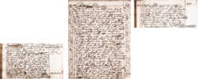

Martha Ballard's Story
Chapter 11
The case is heard in Vassalboro
It was because Martha was asked to testify in Vassalboro in December of 1789, that she finally wrote down what Rebecca Foster told her months earlier, in August of 1789. She had just spent the day in court, and she knew she would be called on again when the case moved to a higher court. This entry (from which we saw excerpts in Ch. 9) is the longest entry in the entire diary.Martha tells us that during the trial at Vassalboro, "mrs Foster apeard very Calm, Sedate & unmovd, not with Standing the Strong atempts there were made to throw aspercions on her Carrecter."
Did Rebecca Foster really live through a week of rape and terror?
| According to the official indictments in Rebecca's case, Elijah Davis committed his assault "with an intent to ravish" on August 3, Joshua Burgess on August 6, and Joseph North on August 9. |
Rebecca's cryptic comments to Martha about people throwing stones and striving to get in and lodge with her are transformed by the specific, concrete accusations in the indictment. If she was telling the truth, she was raped three times in one week, each time by a different man.
Toward the end of this diary entry, Martha writes that Judge North told her that he "believd mrs Foster was treated as Shee Complains" but that he was innocent. What did Judge North mean? Was he claiming her accusation against him "which he Should Deny" was a case of mistaken identity? Was he claiming that other men had raped Rebecca, but that he had only stolen a kiss or two? Or was he claiming that Rebecca had consented to his advances?
And what did Rebecca Foster stand to gain by bringing this case to court? What chance did she stand when the jury weighed the word of a prominent judge against hers -- the word of a discredited minister's wife? Why had she spoken up?

| previous |
Rebecca Foster swears a Rape "on a number of men" | |
| next |
Will we ever know? |
|
Martha Ballard's Diary |
View Text View Frames version |
| Dec 23, 1789 |
 |
|